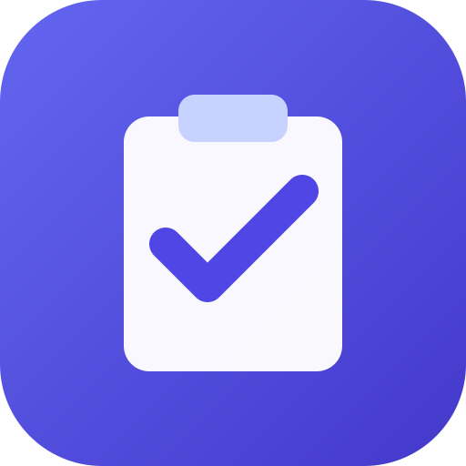

Privacy policy
FDD Tracker · last updated 24 October 2026
FDD Tracker is a free, open-source work tracker for financial due diligence. This page explains what information the app uses, where it is kept and who can see it. The app has no server of its own: it runs entirely in your browser and talks to Google directly.
Your data in the app
Engagements, tasks, work papers, review points, IRLs, follow-ups, people, time entries, settings and assistant chats are stored in your browser's storage (IndexedDB) on each device you use. Without a Google connection they never leave the device, except when you export a backup file yourself.
Google account data the app uses
Connecting a Google account is optional. If you connect, the app asks for these permissions and nothing else:
-
Your email address (
openid,email). Shown in Settings so you can see which account is connected, and used to reconnect to the same account. Kept on your device only. -
A private app folder in your Google Drive (
drive.appdata). The app saves a copy of your data in Drive's hidden application-data folder so your devices stay in sync. It cannot see, open or change any of your other Drive files, and the folder doesn't appear in the Drive interface. -
Google Calendar events (
calendar.events).- The app creates events on your primary calendar for the reminders, engagement key dates and task due dates you choose in Settings, for tasks with a time, and for focus blocks you schedule. Each one is tagged as created by FDD Tracker, and the app only updates or deletes events with that tag.
- It reads the title, time and link of events on your primary calendar to show them next to your work: today's events on the Today screen (cached on your device and replaced each day) and the days you open on the Calendar screen (kept in memory only). They are not sent anywhere else, including to the assistant.
-
Gemini (
generative-language.retriever), for the assistant. Nothing is sent until you use it. Then your messages, any images or PDFs you attach, and the app data the assistant looks up to answer (for example an engagement's open IRL items) are sent to Google's Gemini API to generate a reply. Processing by the Gemini API is covered by Google's terms and privacy policy.
Sign-in happens on Google's own page (accounts.google.com). The app never sees your Google password. It keeps only a short-lived access token on your device and does not request offline access.
How Google user data is used and shared
- Google data is used only to provide the features above: syncing your own data, your calendar entries and the assistant.
- No copy is sent to the app's developer. The developer cannot read, recover or delete your data.
- It is not sold, shared with or transferred to anyone else.
- It is not used for advertising or profiling, and it is not used to develop, improve or train generalised AI or machine-learning models.
- No person other than you (and whoever you share your Google account with) can read it.
FDD Tracker's use and transfer of information received from Google APIs adheres to the Google API Services User Data Policy, including the Limited Use requirements.
Other services
- There are no ads, analytics or third-party trackers.
- The app is served as static files by GitHub Pages, which may log basic request information (such as IP addresses) as described in GitHub's privacy statement.
Keeping and deleting data
- Your data stays until you delete it. Settings → Erase deletes everything on that device, and so does clearing the site's data in the browser.
- To remove the Drive copy, open Google Drive → Settings → Manage apps, find FDD Tracker and choose Delete hidden app data.
- Events the app added stay in Google Calendar until you or the app delete them.
- To revoke the app's access to your Google account, use myaccount.google.com/permissions.
Changes and contact
Changes to this policy are published on this page and in the app's source repository. Questions or requests can be raised as an issue on GitHub.